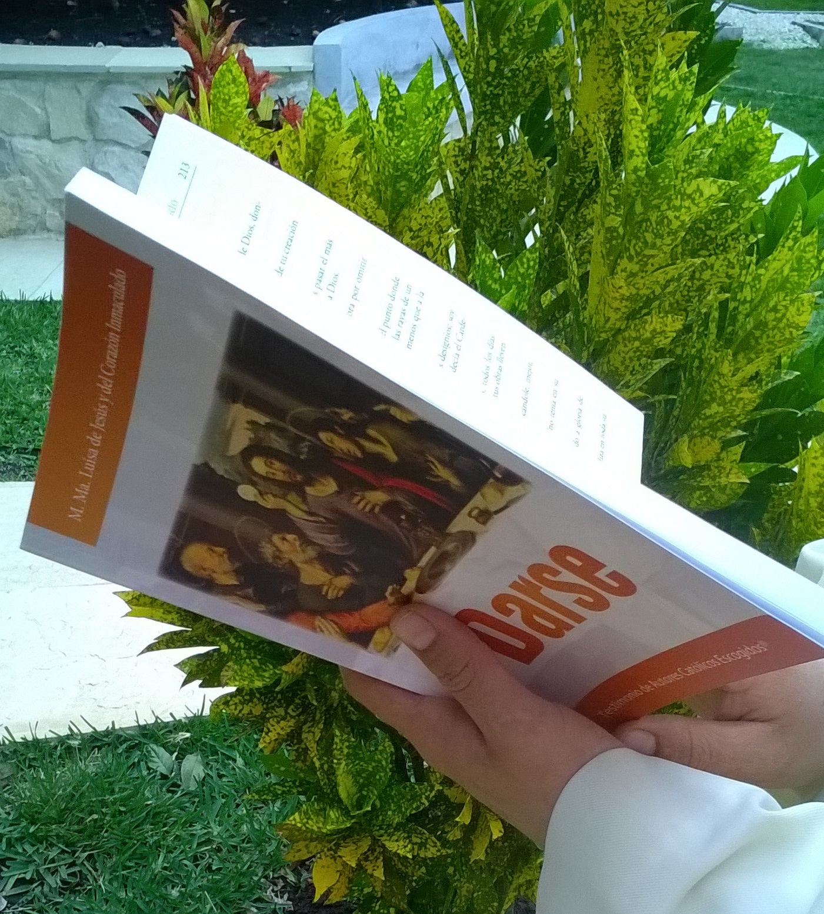

Sus Escritos
Extractos de la espiritualidad profunda de la Madre María Luisa
M. María Luisa de Jesús y del Corazón Inmaculado fue autora de varios libros de alta y profunda espiritualidad, tales como: Darse, Vaso roto, Consumarse en el amor, La Esclava y el Verbo, Almas totales, Hacia las cumbres y Ella. A través de estas obras hizo un inmenso bien a las almas.
Compartimos a continuación algunos fragmentos significativos de sus escritos:
Cuando nos acercamos al Sagrario parece como si dos brazos inmensos nos cogieran dentro. Como si dos alas maternas nos cubrieran de los pies a la cabeza. Como si dos fortísimas murallas nos defendieran de todas las flechas.
Cuando se sufre de soledades y se padece de ausencias... Cuando sobran quizás cosas y faltan quizás personas..., tenemos al Amigo de los cinco boquetes que nunca nos falla. Él nos querrá siempre incondicionalmente. Prescindiendo de nuestras nulidades, indignidades o bondades. Ahí estará siempre. Dándonos Su Corazón traspasado sin pedirnos a cambio más “prendas” que el corazón nuestro...
Navega en el Mar de Dios a ojos cerrados. Húndete en Él. En ese Eterno Presente que está en tu alma. Serás muy feliz si aprendes a vivir en esta navegación divina y sabes permanecer sereno aún cuando arrecie la tempestad. Empezar ya en la tierra la vida del Cielo. Si allí nuestra ocupación será un interminable y maravilloso éxtasis de amor, aquí lo va a ser una cadena de actos de amor, invadiendo con el perfume de un amor-tope todos los rincones de nuestras horas.
Que no exista en nuestra vida nada que no sea amar a Dios. Que cuando en el umbral de nuestra Eternidad, Dios se disponga a hacernos la más escalofriante pregunta: “¿Cómo gastaste tu vida?”, podamos tú y yo responderle esta única palabra: “Amé”.
La Virgen. Ella es la Guardiana de los Secretos de la Trinidad. La Abandonada a las iniciativas divinas. La Silenciosa Morenita que sabía esperar las intervenciones de Dios. La Dulce Mendiga que pasó por nuestras posadas suplicando un metro de techo. ¡La que hizo el milagro de vestir a Dios con los miembros de un niño!
De todos los privilegios de la Madre de Jesús no sabríamos cuál nos fascina más. Unos son el cimiento y la clave. Otros el capitel y la cúpula. Su Concepción purísima... Su plenitud de gracia... Su maternidad divina... Su virginidad fecunda... Su ¡todo un Dios! obedeciéndole... “Madre mía, ¿cuál de todas las prerrogativas es para Ti la más grande?” Y a ti y a mí nos parece que la delicada voz de una Jovencita nos contesta: “Ser la esclava del Señor”.
